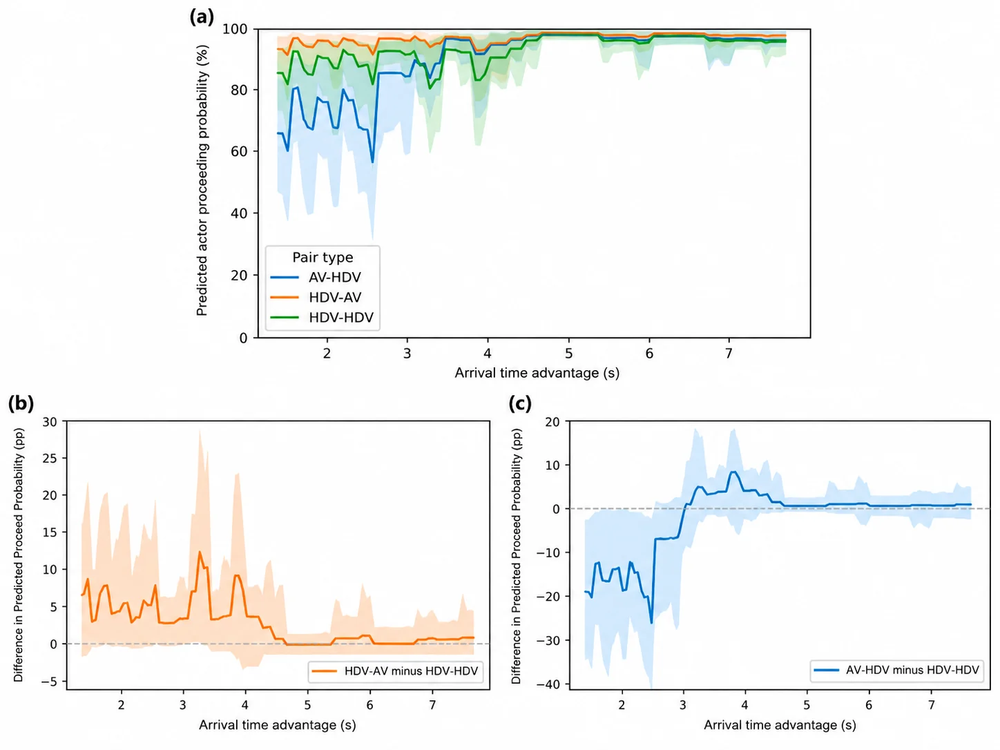
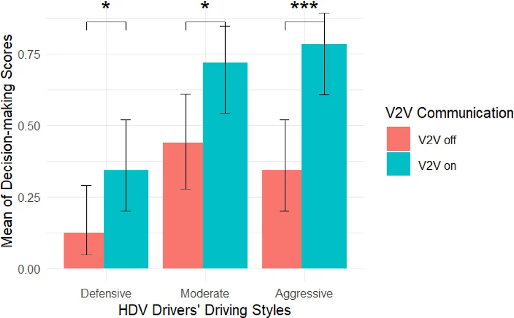

01Who goes first at a stop sign?
AVs and human drivers negotiate right-of-way differently—especially when arrival priority is ambiguous.
2,873 interactionsXGBoostSHAP
Explore project ↗Using real-world vehicle data and driving-simulator experiments to make AV interactions safer, clearer, and more predictable.
HUMAN FACTORS · BEHAVIORAL MODELING · AV SAFETY
01AVs and human drivers negotiate right-of-way differently—especially when arrival priority is ambiguous.
 02
02Intent cues helped human drivers understand AV behavior and reduced aggressive responses.
 03
03Assertive, rule-compliant AV behavior was associated with fewer aggressive decisions by human drivers.
Surrounding-vehicle aggression can prompt driver-initiated takeovers and change subsequent control behavior.
Tested different visual cues for supporting situation awareness in Level 3 automated driving.

At higher AV penetration rates, aggressive drivers adapted their tactical decisions more strongly than defensive drivers.
Read published study ↗Extracted Waymo and Lyft trajectory features; compared stopping and proceeding decisions; developed nested XGBoost models and SHAP analyses.
What we learnedAV planning should account for tactical priority and operational stopping behavior together.
Designed and analyzed simulator interactions varying V2V communication and AV driving style.
What we learned
Designed urban and highway negotiation scenarios and quantified human drivers' behavioral responses to defensive versus assertive AVs.
What we learnedDesigned simulated honking, tailgating, and sharp-braking interactions and examined driver-initiated takeover and subsequent vehicle control.
What we learnedMore intense surrounding-driver aggression was associated with greater takeover likelihood; post-takeover control differed from automation.
Figure neededReplace the placeholder with an approved takeover scenario illustration or results figure from your manuscript.
Compared eight augmented-reality head-up display configurations during simulated adversarial roadway events.
What we learnedSituation-awareness support varied by cue type; different visual designs supported different levels of situation awareness.
Figure neededReplace the placeholder with side-by-side screenshots of your tested AR-HUD conditions.